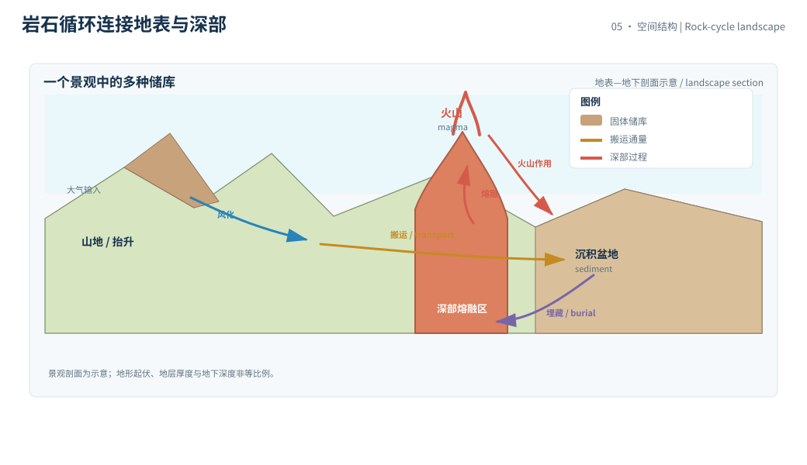
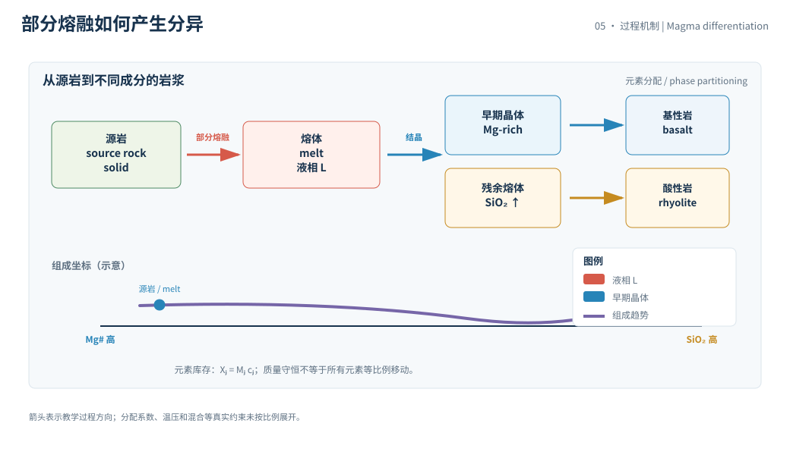

本页目录
深部 III · 岩石循环与地球化学分异
岩石循环不是一条从岩浆到沉积物再回到岩浆的传送带，而是多个储库之间有速率、有选择性、有损失的物质交换。把岩石分类只是入口；真正的地球化学问题是元素随哪一个通量移动，以及循环是否封闭。
学习层：用三个箱体追踪一块岩石的去向
1. 具体情境：一块新鲜火成岩如何回到深部
把地表的一段岩石圈简化成三个储库：火成岩、沉积物和变质岩。抬升与暴露让火成岩风化，沉积物被埋藏并成岩，变质岩在更深处熔融或再循环回到火成储库。研究者想知道的是：提高某一过程的速率，会把库存推向哪里？系统总质量是否仍然守恒？
实验中的库存和速率是无量纲教学设定，以“相对质量单位”和“每百万年”计；它不是全球岩石质量清单，也不是某一地点的地球化学预算。真实通量必须说明区域、元素、矿物相、时间窗和分析方法。
2. 揭示前预测：循环、分配与守恒
在揭示之前，先预测：
- 只要每一条通量都从一个箱体进入另一个箱体，三个箱体总库存会增加、减少，还是保持不变？
- 提高火成岩风化速率，短期内沉积物库存更可能上升还是下降？
- 若埋藏比熔融快，变质岩库存会怎样变化？“有循环”是否自动意味着达到稳态？
揭示后图中的箭头宽度对应当前通量，箱体高度对应库存。箭头粗并不意味着该过程在真实地球上普遍更快；它只表达当前教学参数的相对大小。
3. 公式桥：箱体守恒与元素账本
令 \(I,S,M\) 分别代表火成岩、沉积物和变质岩库存，通量为风化 \(F_w\)、埋藏 \(F_b\) 和再循环 \(F_m\)，则
相加得到
这只对封闭三箱体成立。若采用一阶过程，例如果风化 \(F_w=k_wI\)、埋藏 \(F_b=k_bS\)、再循环 \(F_m=k_mM\)，每个 \(k\) 的单位是 \(\mathrm{Myr}^{-1}\)。库存分配的时间尺度大约是 \(1/k\)，但多箱体系统的慢模态可能比任何单个 \(1/k\) 都长。
元素浓度还要单独记账。若某元素在箱体 \(j\) 中的库存是 \(X_j=M_j c_j\)，则通量应写成质量通量乘以来源端浓度；熔融、结晶、吸附和有机配体会让不同元素的 \(c_j\) 不同，这就是地球化学分异的来源之一。
数量级上，单次喷发或一场侵蚀事件可以在年到千年尺度改变局地通量，而岩石圈大规模再循环常在百万年到亿年尺度表达。不要拿一次暴雨的沉积量直接和全球地质通量比较。
4. 互动实验：观察库存重新分配而不是只看一条曲线
无 JavaScript 时的静态 fallback：教学设定为初始库存 \(I=60\)、\(S=30\)、\(M=10\)，风化系数 \(k_w=0.06\) /Myr，埋藏系数 \(k_b=0.10\) /Myr，再循环系数 \(k_m=0.08\) /Myr，模拟 \(10\) Myr。总库存初值为 \(100\)，封闭箱体计算后总库存仍为 \(100\)（数值舍入误差接近零）；沉积物比例会先受风化输入影响，变质岩库存则由埋藏与再循环的差决定。
| 账本项 | 默认读法 | 单位 / 解释 |
|---|---|---|
| 火成岩库存 \(I_0\) | 60.0 | 相对质量单位 |
| 沉积物库存 \(S_0\) | 30.0 | 相对质量单位 |
| 变质岩库存 \(M_0\) | 10.0 | 相对质量单位 |
| 风化系数 \(k_w\) | 0.060 | /Myr，一阶教学参数 |
| 埋藏系数 \(k_b\) | 0.100 | /Myr，一阶教学参数 |
| 再循环系数 \(k_m\) | 0.080 | /Myr，一阶教学参数 |
| 总库存闭合误差 | 约 0 | 相对质量单位，数值守恒检查 |
没有 JavaScript 时，读者仍能检查三条守恒式和总库存是否闭合；箱体末值会随浏览器实验输入重算。
5. 边界：岩石循环不是封闭的三箱体
- 开放边界：火山脱气、热液交换、风化输入、生物搬运和沉积物输出会让总库存或元素库存跨越模型边界。
- 分类不是过程：一块岩石可以经历多次变质、部分熔融、混合和再结晶；三类名称不记录完整历史。
- 通量有选择性：石英、黏土矿物、碳酸盐和有机碳不会以同一比例随侵蚀、沉积和熔融移动；质量守恒不等于每个元素都按同一比例守恒。
- 稳态不必然存在：气候、海平面、构造抬升和生物活动改变 \(k\)；过程间的反馈会产生时变、阈值或多个状态。
封闭箱体的闭合误差只能说明代码按设定守恒，不能证明真实地球系统封闭。地球化学反演还需要同位素、元素比、矿物学和物源证据共同约束。
6. 迁移：从岩石箱体到碳和营养元素
把某个箱体换成海洋碳酸盐、陆地有机碳或磷库，公式仍可用；但必须把“岩石质量通量”与“元素质量通量”分开，并写清生物圈、海洋和大气的边界。
迁移题：如果风化通量增加但沉积物库存没有增加，可能是哪一条输出通量同步增强？如果某元素在熔融时优先进入熔体，如何在账本里增加分配系数而不破坏总质量守恒？哪些独立同位素证据能把“源区改变”和“过程速率改变”区分开？


1. 从岩石循环到地球化学循环
岩石循环关注相态、矿物和构造过程，地球化学循环关注元素、同位素和氧化还原状态。二者相互嵌套：板块把海洋沉积物带入深部，火山把挥发分返回表面，风化和沉积改变元素的表层分配，生命又改变许多反应的路径和速率。
2. 部分熔融与结晶分异
岩石并不需要整体熔化才会改变组成。部分熔融优先提取某些成分，晶体分离又会使残余熔体和早期晶体的元素比例不同。若把所有火成岩放在一个箱体里，得到的是总量级模型，不是岩浆房的详细演化。
3. 证据与尺度
岩石年代、矿物组合、主量和微量元素、同位素比值、沉积物物源与地球物理成像提供不同层次的约束。优先查 USGS 的岩石与地质过程资料、NASA 的地球系统资料，以及 IPCC 对硅酸盐风化和碳循环的综合评估。具体实验室数据要标采样地点、分析年份、标准和核验日期。
4. 把质量守恒和元素守恒分开
若一吨岩石从火成箱体进入沉积箱体，总岩石质量可以闭合；但其中的钾、磷、碳或某一同位素可能被溶解、吸附或优先带走。因而分析报告既要有总质量通量，也要有元素浓度和元素通量：
当 \(c_X\) 随矿物相或过程改变时，不能把同一个比例套到所有元素。这个区分也是把地质循环连接到海洋营养盐和大气碳的桥。
对一个真实样品，元素通量还要区分源端浓度、传输端损失和汇端沉淀。只测固体残留物，可能把“元素被带走”误判成“元素从未存在”。
若同位素守恒和元素质量守恒给出不同的路径，优先检查分馏、混合和未观测边界，而不是强迫两个结果相等。
一个好的循环模型会同时报告库存、通量、闭合误差和时间步长；只报告末态比例，无法判断结果是稳态还是暂时过渡。
同位素比值提供额外指纹，但同位素分馏也会随温度、相平衡、反应方向和生物参与而变。它能缩小来源与过程的候选集合，却不自动给出唯一历史。
当箱体时间步长过大时，显式积分可能产生负库存或伪振荡；数值稳定性是模型审计的一部分。实验采用小步长只是为了展示守恒，不代表真实通量被同样精确地知道。
5. 小结
一份合格的岩石循环账本至少写出箱体、通量、元素选择性、边界和时间尺度。先检查总量是否闭合，再检查每个元素是否有独立的来源与去向。下一章把其中一个最快的地表接口拆开：风化如何与土壤、孔隙水和侵蚀共同构成临界带？